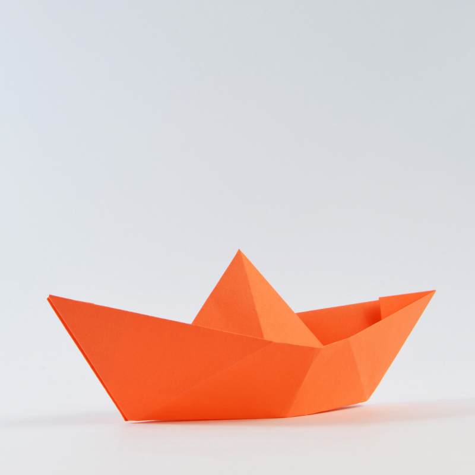

La palabra Pranayama proviene de dos raíces sánscritas: Prana “energía vital” y Yama “controlar”. Por lo tanto, pranayama es el control de la energía vital.
La toma de conciencia en la respiración en los niños y niñas, debe ser de manera lúdica donde la imaginación los invite a viajar por muchos lugares.
Para todas las siguientes actividades es importante que los niños y niñas, estén recostados boca arriba, con sus cabezas apoyadas en un cojín, un bloque, una manta doblada y/o cualquier superficie que les permita visualizar su abdomen con facilidad y no tensionen la zona cervical.
Pídeles que lleven su juguete preferido a clases y recostados/as en la postura previamente descrita, pídeles que sitúen a su juguete sobre el abdomen y vean como este se mueve gracias al movimiento de su estómago.
Puedes dar consignas tales como:
- “ Tu juguete toca el cielo, tu juguete toca la tierra”,
- “ Tu juguete acaricia las nubes, tu juguete acaricia a las hormigas”
Utilizando el recurso del origami, confecciona un barco para ser situado sobre el abdomen de los niños y niñas. Invítalos a que imaginen que su abdomen es el océano y que el barco navegará en el. La marea puede estar muy calma pero a momentos muy alta, juega con tu creatividad!
Previo a que se recuesten, comparteles globos de colores para que los observen e inflen. Juntos/as descubran cómo se transforman al llenarnos de aire y qué pasa cuando se desinflan. Transfiere la misma imagen a sus cuerpos, pidiéndoles que lleven sus manos al abdomen y que imaginen que ahora el globo está dentro de ellos. “El globo se infla, se desinfla…”
Respiración de la escalera.
Todos los niños/as deben estar recostados boca arriba, formando una escalera de la siguiente forma: la cabeza de cada niño/a debe descansar en el abdomen de otro. Invítalos a que cierren sus ojos, respirar profundo y sentir como su cabeza se eleva con la respiración del compañero/a.